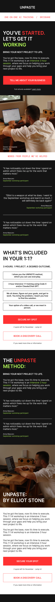
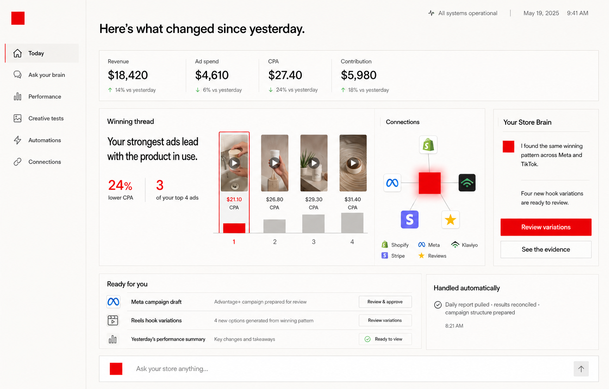
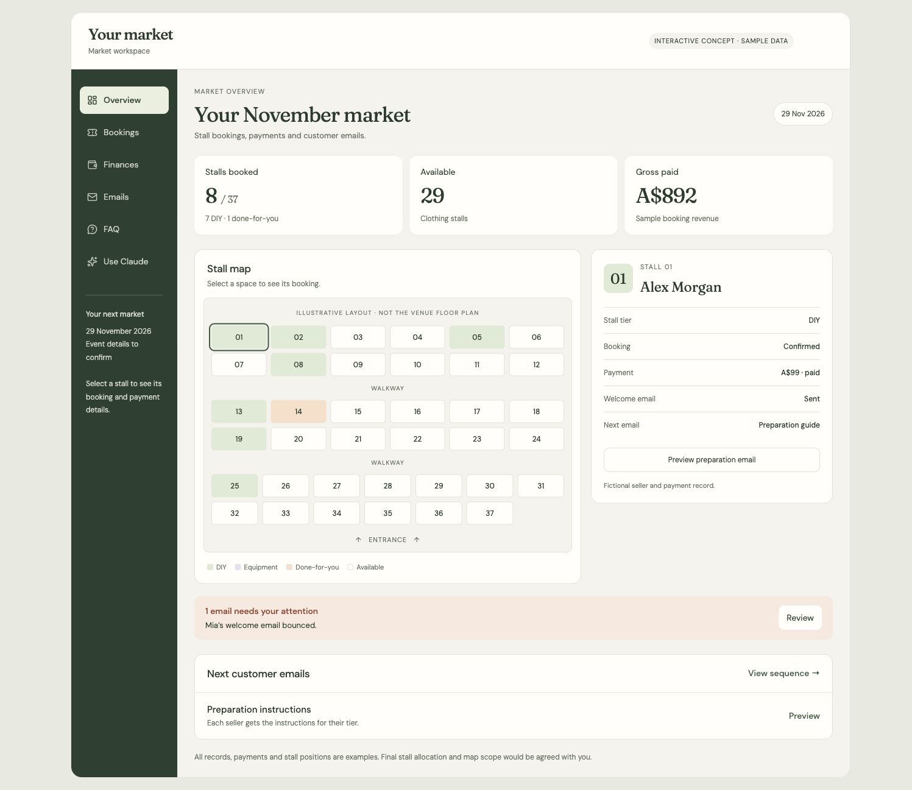

Social media content pipeline
Turn your footage and ideas into drafts, captions and edits you can review before posting.
4 SPOTS LEFT IN NOVEMBER
I’ll teach you how to use Claude Code or ChatGPT like the top 1%.
You’ve got the base, now it’s time to execute. This 1:1 is an intensive 3-hour session, where we focus on helping you work through your gaps and help you bring your next project to life.
BOOK A DISCOVERY CALLA free 20-minute discovery call where we talk about what you’re working on and how we could help.
5-star Google reviewsRead what people say ↗
3 HOURS1 PROJECTA DESIRED
OUTCOME.
Three hours of private training with Elliot, focused on your project. We agree where to start on the discovery call, then work through it on your own computer.
Bring the version you’ve already started, the job you keep doing manually, or the idea you want to put into practice. We work out which gaps to focus on.
Hands-on help with your own project, using Codex, Claude or ChatGPT. You can ask questions as they come up and see how I work through the problems.
Learn how to give your agent the context it needs about your business, your files and the work you want it to do.
Connect the tools you already use to your AI workspace, so your agent can work with your emails, website, CRM or store. We focus on the connections your chosen project needs and show you how to use them.
We’ll check your tools and account access on the discovery call.
Turn the instructions you keep repeating into workspace guidance you can keep, update and use again.
Practise giving instructions, checking the output and working through changes. You use your own judgement and business knowledge as we go.
Keep the work we do in your workspace. Use the project worksheet to record what’s working, what still needs attention and what you want to do next.
Your option of a video call, or we meet in person.
We’ll talk through your project and whether the 1:1 is a good fit.
ELLIOT STONE / FOUNDER OF UNPASTE
I run one-on-one AI training, team sessions and workshops in Brisbane.
I come to you, we sit down, and start working on what matters in your business. I explain it as we go, so you’re learning while we work through your project.
SOME OF THE POSSIBILITIES

DESIGN CONCEPT · EXAMPLE DATA · TAP TO EXPLORE
Store results in one tab, ads in another, customer questions somewhere else. Bring them into one view so you can ask your agent what needs attention and check the evidence.

DESIGN CONCEPT · SAMPLE BOOKINGS · TAP TO EXPLORE
Stall bookings, payments and customer emails spread across spreadsheets. Work towards an app with a visual floor plan and the information you need to run the event.
Bring what you’ve started. On the discovery call, we’ll agree which part to work through in your three-hour session. These concepts show the bigger possibilities as you keep building your skills.
YOUR CALL / YOUR SESSION / WHAT COMES NEXT
If it’s a good fit, we agree on your project, what to bring and a time for your three-hour session. We’ll check which tools and accounts you’ll need.
I come to you, or we meet on a video call. We set up your workspace, connect the tools you need and work through your project together.
4 WEEKS
Keep working on your project. When you get stuck, send me a message on WhatsApp and we’ll work through the gaps.
“I come to you, we sit down, and start working on what matters in your business.”
“So you’re learning as you’re going.”
Elliot Stone
“Since the workshop I've kept building on what I learnt and now use my agent across more of my daily tasks.”
FREE STARTER KIT / USE IT TODAY
Give your agent some context about your business before you ask it to work. Start with the interview prompt, then try the other resources in your own workspace.
“You're setting up as my assistant in this workspace. Before you write anything, interview me.”
BONUSES / INCLUDED WITH YOUR SESSION
Give your agent the context it needs about your business, your customers and how you work.
COPY & PASTE PROMPTA prompt to help your agent prepare a shared project, so you and a collaborator can work on it together.
AGENT INSTRUCTIONSSet up a plan for a report, content calendar or other document you produce regularly.
REUSABLE WORKFLOW PROMPTKeep track of what you’ve built, what’s working and what you want to work through next.
PROJECT WORKSHEETPOTENTIAL SAVINGS / USE YOUR OWN NUMBERS
Think about the work you currently pay someone else to do. As you learn to run more of it yourself, what could that free up in your business?
ILLUSTRATIVE EXAMPLE
Potential reduction in annual spend
Before training fees and the value of your time.
This is a scenario to explore, not a saving promised from one session. You may still want specialist help for parts of the work. Your setup, ongoing costs and time will affect the result.
Bring one of these jobs to the discovery call. We’ll work out where to start and what skills would help you take more of it on yourself.
BOOK A DISCOVERY CALL“You don’t need to be technical. You can talk to the system in plain language. I’ll show you how to give it clear instructions and get the most out of it.”
You’ve got the ideas for what you want to do, and now it’s just about learning how to operate these AI agents to do the work that you want to do.
Supercharge your business this November using Claude Code or Codex.
4 SPOTS LEFT IN NOVEMBER
YOUR TRAINING / MONEY-BACK GUARANTEE
We’ll talk through your project and whether the 1:1 is a good fit.